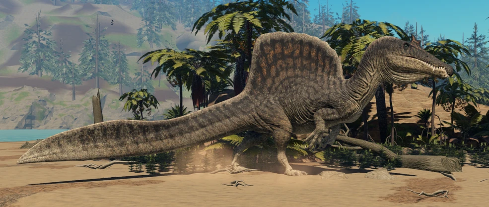
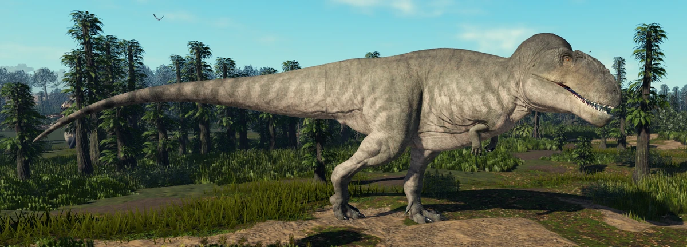
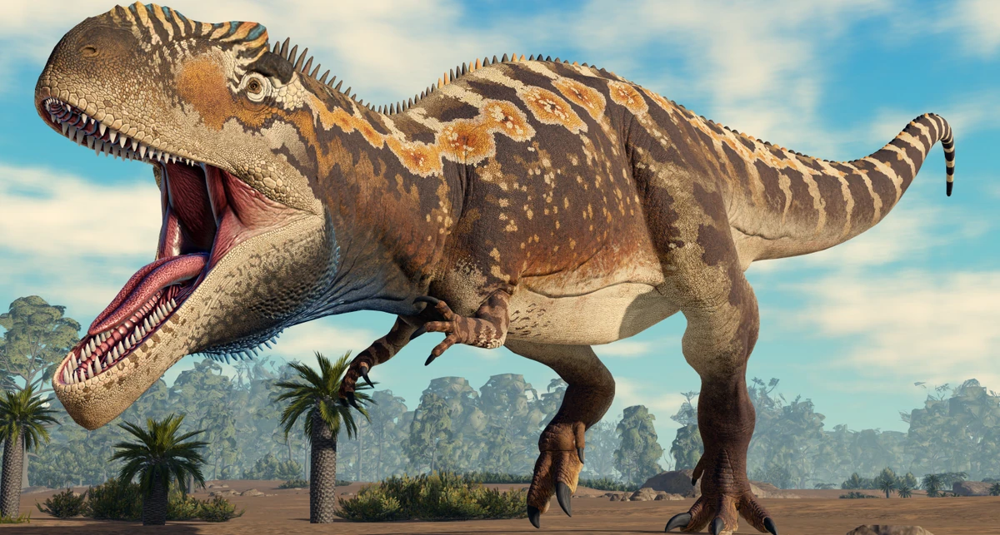
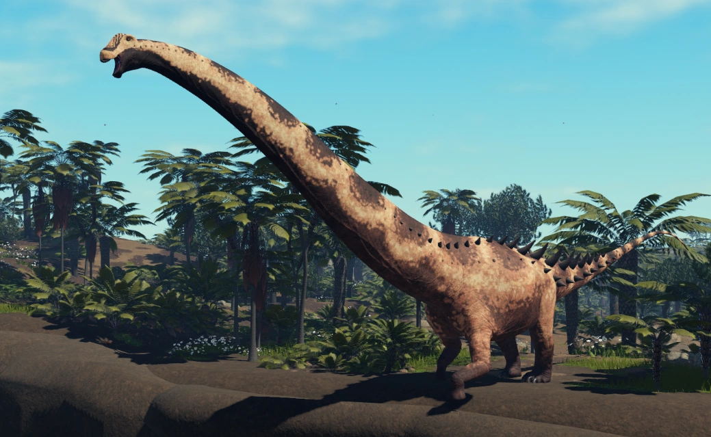

Spinosaurus Aegyptiacus
Espinossauro (nome científico: Spinosaurus; cujo nome significa Lagarto Espinho) foi um gênero de dinossauro espinossaurídeo que viveu durante o Cenomaniano do período Cretáceo, entre 100 e 94 milhões de anos atrás, principalmente na região que é hoje o Norte da África[2]. Este gênero foi conhecido a partir de vestígios egípcios descobertos em 1912 e descritos em 1915 pelo paleontólogo Ernst Stromer. Esses primeiros vestígios foram destruídos na Segunda Guerra Mundial, mas material adicional foi encontrado no início do século XXI. O S. aegyptiacus é a espécie-tipo do gênero, embora haja o S.mirabilis,uma espécie descrita formalmente em fevereiro de 2026 do Níger e S. maroccanus como uma espécie em potencial. Sobre seus sinônimos, o gênero Sigilmassasaurus já foi sinonimizado por alguns autores como um S. aegyptiacus, embora outros pesquisadores proponham que seja um gênero distinto, outro possível sinônimo é o Oxalaia da Formação Alcântara no Brasil, como um sinônimo não totalmente crescido de S. aegyptiacus.
O Espinossauro foi um dos maiores dinossauros terópodes que já existiram, com as últimas estimativas sugerindo que poderia ter medido em torno de 14-18 metros de comprimento e 6,3 metros de altura, podendo ter pesado algo em torno de 7,4-20 toneladas[3]. O crânio do Espinossauro era longo, baixo e estreito, similar ao de crocodilianos modernos e tinha dentes cônicos retos sem serrilhas. Tinha membros anteriores (braços) grandes, bem desenvolvidos e com três dedos, nos quais portavam grandes garras, especialmente a do primeiro dígito. Possuía grandes prolongações espinhais dos processos de sua coluna vertebral, que cresciam a pelo menos 1,65 metro em comprimento e que, provavelmente, tinha pele conectando-as, formando uma vela dorsal, o que lhe conferiu o nome de "lagarto espinho". Os ossos da pelve do Espinossauro eram reduzidos, e suas pernas eram curtas em comparação com o tamanho de seu corpo. Sua cauda longa e estreita era aprofundada por altas e finas espinhas neurais, formando uma cauda flexível e com uma estrutura semelhante a um remo.
O Espinossauro é conhecido por ter tido uma alimentação piscívora e a maioria dos cientistas acredita que ele caçava presas tanto terrestres quanto aquáticas. As evidências sugerem que era semiaquático, mas a extensão de sua capacidade de nado é algo que vem sendo bastante contestado. Múltiplas funções para sua vela dorsal foram sugeridas, incluindo termorregulação e exibição, tanto para intimidar rivais quanto para atrair parceiros. Viveu em uma ambiente úmido de planícies de maré e florestas de mangue ao lado de muitos outros dinossauros, bem como peixes, crocodilomorfos, lagartos, tartarugas, pterossauros e plesiossauros.
Esse é o Spinosaurus:

Spinosaurus Maroccanus
Spinosaurus Marocannus é consideriado o mesmo que Spinossaurus Aegyptiacus porque os fósseis não mostram diferenças claras o suficiente para separar uma nova espécie, sendo as variações vistas como diferenças individuais ou de crescimento dentro do próprio Spinosaurus.
Esse é o Spinossaurus Maroccanus:

Carcharodontosaurus Saharicus
Carcharodontosaurus (em português, carcarodontossauro[1] do latim "lagarto com dente de tubarão") foi um gênero de dinossauro terópode que viveu durante o período Cretáceo no Nordeste da África. Atualmente só temos duas espécies conhecidas, a espécie-tipo C. saharicus e a espécie C. iguidensis. O seu nome foi inspirado no gênero científico Carcharodon, mesmo gênero que inclui o tubarão-branco.
Carcharodontosaurus é um dos maiores dinossauros terópodes conhecidos, com C. saharicus atingindo 12–12,5 metros de comprimento e aproximadamente 6–6,2 toneladas de massa corporal. Tinha um crânio grande e de construção leve com uma tribuna triangular. Suas mandíbulas eram revestidas com dentes afiados, recurvados e serrilhados que guardam semelhanças impressionantes com os do grande tubarão branco, inspiração para o nome. Embora gigante, seu crânio ficou mais leve por fossas e fenestras muito expandidas, mas também o tornou mais frágil que o dos tiranossaurídeos. Os membros anteriores eram minúsculos, enquanto os membros posteriores eram robustos e musculosos. Como a maioria dos outros terópodes, tinha uma cauda alongada para se equilibrar.
O Carcharodontosaurus viveu na África, em locais onde hoje estão a Argélia (local da descoberta dos primeiros fósseis, em 1927), o Egito e a Tunísia, por exemplo. Existem sinais da presença de carcarodontossaurideos também na América do Sul, corroborando a teoria que os atuais continentes África e América do Sul tenham sido um único espaço em parte da era Mesozóica, o Gondwana, e que começaram sua separação há cerca de 135 milhões de anos. Muitos terópodes gigantescos são conhecidos no Norte da África durante este período, incluindo ambas as espécies de Carcharodontosaurus, bem como o espinossaurídeo Spinosaurus e o ceratossauro Deltadromeus. Isto sugere que houve divisão de nicho entre os diferentes grupos, com o Spinosaurus sendo piscívoro, enquanto o Carcharodontosaurus consumiria dinossauros saurópodes, agindo como o predador alfa em seu paleoambiente.
Esse é o Carcharodontosaurus:

Giganotosaurus Carolini
Giganotosaurus, (em português Giganotossauro[1], do grego "lagarto gigante do sul") foi um gênero de dinossauros terópodes que viveu na região da atual Argentina, durante o período Cretáceo, no estágio Cenomaniano, há aproximadamente 99,6 a 97 milhões de anos,[2] mais especificamente na Formação Candeleros, na Patagônia. Seus primeiros fósseis foram encontrados em 1993, no mesmo local, e descrito em 1995 como Giganotosaurus carolinii, em homenagem ao seu descobridor, Rubén D. Carolini.
O Giganotosaurus foi um dos maiores carnívoros terrestres conhecidos, mas o tamanho exato tem sido difícil de determinar devido à incompletude dos restos encontrados até agora. As estimativas para o espécime mais completo variam de um comprimento de 12 a 13 metros (m), um crânio de 1,53 a 1,80 m de comprimento e um peso de 4,2 a 13,8 toneladas (t). O osso dentário que pertencia a um indivíduo supostamente maior foi usado para extrapolar um comprimento de 13,2 m. Alguns pesquisadores consideraram que o animal era maior que o Tiranossauro, que historicamente tem sido considerado o maior terópode, enquanto outros consideram que eles eram aproximadamente iguais em tamanho e as maiores estimativas para o Giganotosaurus são exageradas. O crânio era baixo, com ossos nasais rugosos (ásperos e enrugados) e uma crista no osso lacrimal na frente do olho. A frente do maxilar inferior era achatada e tinha uma projeção para baixo (ou "queixo") na ponta. Os dentes estavam comprimidos lateralmente e tinham serrilhas. O pescoço era forte e a cintura peitoral proporcionalmente pequena.
Parte da família Carcharodontosauridae, o Giganotosaurus é um dos membros mais conhecidos do grupo, que inclui outros terópodes muito grandes, como o Mapusaurus e o Carcharodontosaurus, intimamente relacionados. Acredita-se que o Giganotossauro tenha sido homeotérmico (um tipo de "sangue quente"), com um metabolismo entre o de um mamífero e um réptil, o que permitiria um crescimento rápido. Teria sido capaz de fechar suas mandíbulas rapidamente, capturando e derrubando presas com mordidas poderosas. O "queixo" pode ter ajudado a resistir ao estresse quando de uma mordida contra a presa. Acredita-se que o Giganotossauro tenha sido o principal predador de seu ecossistema, e pode ter se alimentado de dinossauros saurópodes juvenis.
Esse é o Giganotosaurus:

Dreadnoughtus Schrani
O Dreadnoughtus, cujo nome significa "temente de nada",[2] é considerado o maior dinossauro que já existiu, e consequentemente o maior animal que já pisou na Terra, há 77 milhões de anos. O nome da espécie, schrani, foi escolhido em homenagem ao empresário americano Adam Schran, que financiou a pesquisa[3]
Foram recuperados de sedimentos na região da Patagônia argentina 70% dos ossos do esqueleto de um único animal, inclusive vértebras, e os mais importantes ossos para o cálculo de massa corporal: úmero e fêmur.[4] Alguns tecidos moles, como tendões, também foram obtidos nas escavações. Graças aos resultados de quatro anos de escavações e seis temporadas em pesquisas, o Dreadnoughtus é o dinossauro com "o maior peso confiável já calculado", segundo seu descobridor, o paleontólogo professor Kenneth Lacovara, da Universidade de Drexel, na Filadélfia, Estados Unidos. Sua equipe trabalhou em conjunto com uma equipe do Centro Nacional Patagônico em Chubut, na Argentina.
O maior espécime de dois recuperados atingiu em vida o comprimento de vinte e seis metros, sendo onze metros de pescoço e nove metros para o rabo. Pesava sessenta e cinco toneladas, embora evidências mostrem que o animal não chegou a crescer até o tamanho total da espécie. Com tais dimensões, o Dreadnoughtus superou todos os outros gigantes da Patagônia em tamanho e peso: o antigo campeão dos mais pesados, o Elaltitan, tinha 47 toneladas e o maior dinossauro de todos, o Argentinossauro, ocupa hoje o segundo lugar.
Esse é o Dreadnoughtus:

Argentinosaurus Huinculensis
O Argentinosaurus (que significa "lagarto argentino") é um gênero de dinossauro saurópode gigante que viveu durante o período Cretáceo Superior no que hoje é a Argentina. Embora seja conhecido apenas por restos fragmentários, o Argentinosaurus foi um dos maiores animais terrestres conhecidos de todos os tempos, medindo de 30 a 35 metros de comprimento e pesando de 65 a 80 toneladas. Era um membro dos Titanosauria, o grupo dominante de saurópodes durante o Cretáceo.
O primeiro fóssil do Argentinosaurus foi descoberto em 1987 por um fazendeiro em sua propriedade perto da cidade de Plaza Huincul. Uma escavação científica no local, liderada pelo paleontólogo argentino José Fernando Bonaparte, foi realizada em 1989, revelando diversas vértebras dorsais e partes de um sacro, vértebras fundidas entre as vértebras dorsais e caudais. Outros espécimes incluem um fêmur completo e a diáfise de outro. O gênero Argentinosaurus foi nomeado por Bonaparte e pelo paleontólogo argentino Rodolfo Coria em 1993; o gênero contém uma única espécie, Argentinosaurus huinculensis, em homenagem ao local de sua descoberta, Plaza Huincul.
A natureza fragmentária dos restos do Argentinosaurus dificulta sua interpretação. Os argumentos giram em torno da posição das vértebras recuperadas dentro da coluna vertebral e da presença de articulações acessórias entre as vértebras que teriam fortalecido a coluna. Um modelo computacional do esqueleto e dos músculos estimou que este dinossauro tinha uma velocidade máxima de 7.2 km/h com um passo, uma marcha em que os membros anteriores e posteriores do mesmo lado do corpo se movem simultaneamente. Os fósseis do Argentinosaurus foram recuperados da Formação Huincul, que foi depositada entre o Cenomaniano Médio e o Turoniano Inferior (cerca de 97 a 93.5 milhões de anos atrás)[1] e contém uma fauna diversificada de dinossauros, incluindo o terópode gigante Mapusaurus.
Esse é o Argentinosaurus:
![Dinossauro saurópode gigante visto de perfil inteiro voltado para a esquerda, em pé sobre uma planície gramada. O animal possui um pescoço longo e vertical, decorado com uma padronagem verde vibrante que lembra folhas de samambaia ao longo da lateral do pescoço, contrastando com o corpo de cor cinza-escura e marrom. Pequenos espinhos ósseos cobrem suas costas, e sua cauda longa se estende horizontalmente para a direita. Ao fundo, árvores altas sob um céu azul e limpo completam o cenário pré-histórico.](YggdrasilMale.webp)
Dacentrurus
Dacentrurus (que significa "cauda cheia de pontas") é um gênero extinto de dinossauro estegossauro do Jurássico Superior e possivelmente do Cretáceo Inferior (154–140 milhões de anos atrás ) da Europa . Sua espécie-tipo , D. armatus , foi nomeada em 1875 como Omosaurus armatus , com base em um esqueleto encontrado em uma pedreira de argila na Formação Kimmeridge em Swindon , Inglaterra. Em 1902, o gênero foi renomeado para Dacentrurus porque o nome Omosaurus já havia sido usado para um fitossauro em 1856. Após 1875, meia dúzia de outras espécies foram nomeadas, mas talvez apenas Dacentrurus armatus seja o nome válido.
O Dacentrurus está entre os maiores estegossauros conhecidos, medindo cerca de 8 a 9 metros de comprimento e pesando até 5 a 7,4 toneladas . Os achados deste animal são limitados, portanto, muito de sua aparência é incerto e sua relação com outros membros da subfamília Dacentrurinae é controversa. Alguns pesquisadores sugerem que Miragaia longicollum representa um sinônimo júnior deste táxon.
Esse é o Dacentrurus:
![Dinossauro herbívoro quadrúpede visto em perfil três quartos voltado para a esquerda, caminhando sobre um terreno de terra batida. O animal possui um corpo robusto com textura de pele cinza listrada, lembrando o padrão de uma zebra, que transita para tons marrons nas patas. Uma longa fileira de espinhos ósseos afiados e escuros estende-se desde a base do pescoço, passando pelas costas e cobrindo toda a extensão da cauda. Ao fundo, há uma vegetação densa com palmeiras e arbustos tropicais sob um céu azul claro.](Pinecone_Male_Dacent.webp)